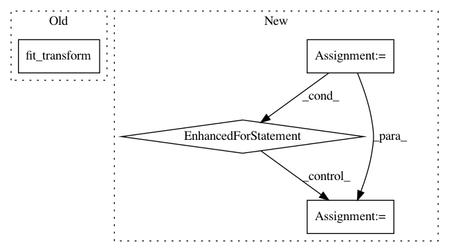

7b881943c322c1a98eaab359b3ee9b148c9c3268,magpie/base/global_index.py,GlobalFrequencyIndex,__init__,#GlobalFrequencyIndex#Any#,11
Before Change
self.X = self.vectorizer.fit_transform(contents)
self.transformer = TfidfTransformer()
self.tfidf = self.transformer.fit_transform(self.X)
def get_term_occurrences(self, term):
words = term.split()
scores = [self._get_word_occurrences(w) for w in words]
After Change
for d in documents]
// Build the index
for doc_id, words in contents:
for w in words:
self.index[stem(w)].add(doc_id)
// def get_term_occurrences(self, term):
// words = term.split()
// scores = [self._get_word_occurrences(w) for w in words]
//
// // TODO another function could do here
// return sum(scores)
//
// def _get_word_occurrences(self, word):
// stemmed = stem(word)
// word_id = self.vectorizer.vocabulary_.get(stemmed)
// if word_id:
// return self.X[:, word_id].sum()
// else:
// return 0
def get_term_idf(self, term):
words = term.split()
scores = [self._get_word_idf(w) for w in words]
In pattern: SUPERPATTERN
Frequency: 3
Non-data size: 4
Instances
Project Name: inspirehep/magpie
Commit Name: 7b881943c322c1a98eaab359b3ee9b148c9c3268
Time: 2015-12-16
Author: jan.stypka@cern.ch
File Name: magpie/base/global_index.py
Class Name: GlobalFrequencyIndex
Method Name: __init__
Project Name: nilearn/nilearn
Commit Name: b32c8a990a744e135c8787456ef5b62ab40d6da7
Time: 2019-04-18
Author: jerome-alexis.chevalier@inria.fr
File Name: nilearn/regions/tests/test_rena_clustering.py
Class Name:
Method Name: test_rena_clustering
Project Name: nilearn/nilearn
Commit Name: 755780e1780497b31d1e2e30a634b34800f2b137
Time: 2015-11-29
Author: dkamalakarreddy@gmail.com
File Name: examples/connectivity/plot_extract_regions_canica_maps.py
Class Name:
Method Name: